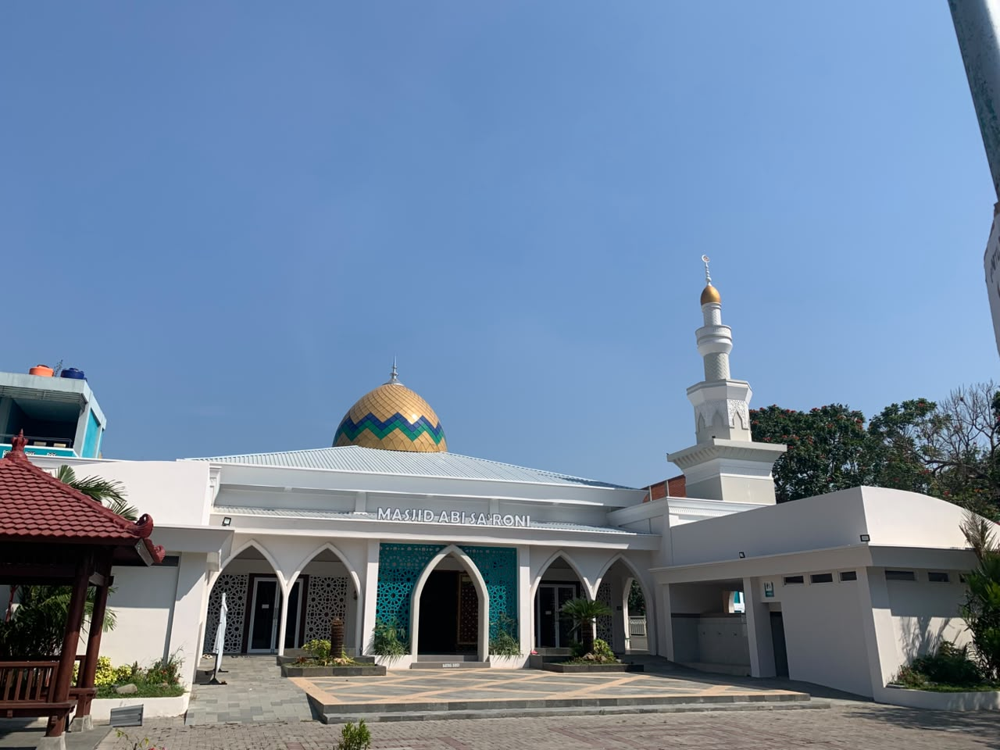
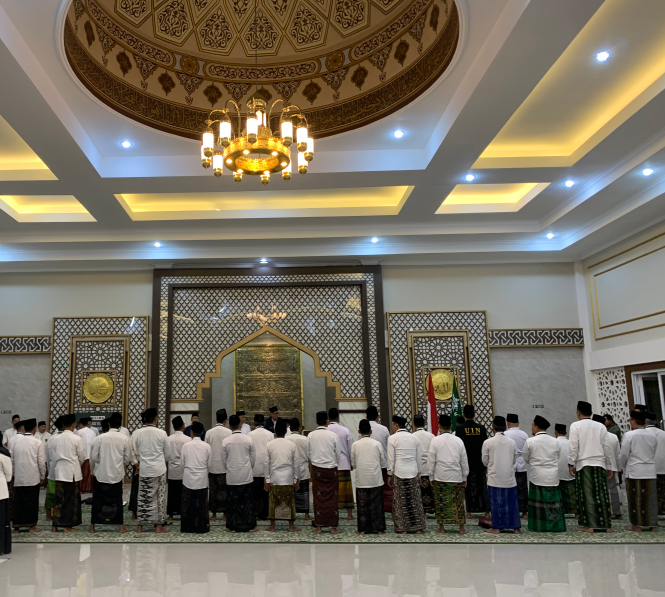
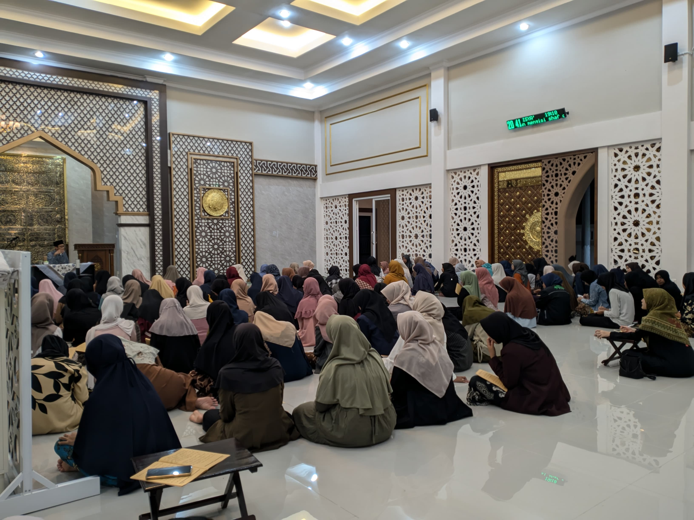

Kajian Islam
Kajian rutin untuk memperkuat ilmu, iman, dan pemahaman keislaman jamaah.
Menyinari kampus, menguatkan umat.
Masjid Jami' Abi Sa'roni menjadi ruang untuk beribadah, menuntut ilmu, bertumbuh bersama, serta menghadirkan manfaat bagi kampus dan masyarakat.

Tentang kami
Masjid Jami' Abi Sa'roni hadir sebagai ruang yang hidup bagi sivitas akademika dan masyarakat: tempat ibadah, pendidikan, dakwah, pelayanan, dan tumbuhnya kebersamaan.
Kami percaya masjid adalah titik temu antara ketundukan kepada Allah, ilmu pengetahuan, kepedulian sosial, dan lahirnya generasi berkarakter.
Waktu ibadah
Jadikan setiap panggilan azan sebagai jeda yang bermakna di tengah kesibukan.
Memuat jadwal hari ini...Data oleh MuslimKita.id · metode Kemenag →Program & kegiatan
Kajian rutin untuk memperkuat ilmu, iman, dan pemahaman keislaman jamaah.
Ruang untuk meningkatkan kualitas bacaan dan kecintaan pada Al-Qur'an.
Menghadirkan kepedulian melalui sedekah, zakat, dan kegiatan sosial.
Rangkaian ibadah dan kegiatan yang mempertemukan spiritualitas dan kebersamaan.
Membangun jamaah yang aktif, peduli, dan saling menguatkan.
Menyalurkan amanah umat agar manfaatnya dirasakan lebih luas.
Kajian & agenda

Dokumentasi kegiatan dan informasi terbaru masjid akan hadir di sini.
Galeri

Berbagi kebaikan
Setiap dukungan untuk kemakmuran masjid insyaAllah menjadi bagian dari kebaikan yang terus mengalir.
Hubungi pengurus →Lokasi & kontak
Hubungi kami